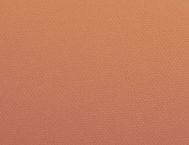

Papiers
à dessin
Il existe autant de papiers que de types de dessins.
De plus, dans ce domaine de la papeterie d'art plus que dans tout autre, la
couleur intervient et joue un rôle important, au même titre que le grammage et
bien sûr la charge électrochimique.
Parmi les papiers destinés à l'ébauche, citons
le papier pour esquisse, le papier pour croquis
et le papier rough ou layout.
Leurs grammages ne dépasse généralement pas 120g/m2. Ils sont
souvent conçus pour certaines techniques précises, comme l'Ingres Vidalon ®
de Canson, papier coloré destiné au croquis au pastel sec ou au
fusain
rehaussé.

Au-delà, nous en venons aux papiers comme l'Ingres de
Fabriano (différentes colorations, un bon grammage de160 g/m2 - voir
photo ci-contre), l'Ingres d'Arches (excellente qualité), destinés principalement au
fusain, mais aussi aux techniques académiques et aux
pastels secs, tandis que le "C à grain ®" de Canson et
l'Accademia ® de Fabriano
sont surtout dédiés au graphite. Ces derniers ainsi que de nombreux autres
papiers peuvent atteindre des grammages de plus de 200 g/m2, autorisant
quelques interventions aqueuses.
Mentionnons aussi le "Mi-teinte" ® de Canson, décliné en plus de
cinquante couleurs. Ce papier, inventé dans la première moitié du XXème
siècle, a une face à grain fort (voir photo ci-dessous) et une
face presque lisse. D'un grammage de 160 g/m2, il se prête beaucoup
aux travaux réalisé avec des pastels secs.

Les papiers pour lavis ont un poids d'au moins 220g/m2. On sort
alors du domaine classique du dessin "sec".
La tension de la feuille peut jouer un rôle
déterminant.
Le dessin proprement dit, par opposition aux différentes catégories d'ébauches, nécessite de 130 à 200 g/m2. Les variétés de papiers
sont nombreuses, mais les plus représentatives sont "grammées" autour de 160g/m2,
en feuilles souvent colorées ('Mi-teintes ®" de Canson, "Tiziano
®" de Fabriano, etc.), destinées à différentes techniques allant du graphite
aux pastels secs, sans parler de l'encadrement (papiers
contrecollés).
Pour les travaux au fusain et les
académies à la sanguine, souvent
renforcées par des encres, les Vélins d'Arches ® (voir
Vélin in Glossaire, voir aussi Les) et BFK Rives ®, normalement
destinés à la gravure, sont assez couramment employés. Les vélins
présentent un grain moyen, les BFK sont lisses. Les papiers pour l'aquarelle
sont également utilisés.

Mentionnons enfin le papier "peau d'éléphant", fin et sans grain, mais
présentant une bonne tenue en présence de liquides. Très lisse mais marbré,
disponible en différentes couleurs, il est particulièrement intéressant pour
l'encre de Chine appliquée à la plume ou au calame.
Aplanir un papier trop ondulé.
Il existe plusieurs manières d'effectuer cette opération délicate.
L'important dans tous les cas est de réaliser un ou plusieurs essais préalables
sur des échantillons préparés et peints (ou dessinés) de manière comparable à
l'original que vous souhaitez traiter. Au moindre doute sur la sûreté du
procédé, il faut en changer ou renoncer.
Évoquons d'abord une vieille recette. Elle est très simple : il s'agit de
repasser au fer le verso de la feuille. Avec certains papiers, la vapeur peut
être employée, avec d'autres non et cela dépend aussi des substances présentes à
l'avers.
Une presse peut également être employée, par exemple dans un atelier de
gravure. Il faut alors demander les conseils du responsable et de toute façon
effectuer un test préalable sur un échantillon.
Une autre méthode nous a été communiquée par un lecteur de Dotapea qui a
gentiment accepté que nous la publions. Elle concerne un travail à l'encre de
Chine réalisé sur un papier de 125 grammes. La voici :
"j'ai passé la feuille Canson sous un filet d'eau (sur le dos), ce qui
donna une sorte d'effet compensatoire : la feuille était sur le moment du moins
comme désirée. Je l'ai ensuite posée sur une table, puis étendue, l'eau du dos
de la feuille adhérant. Je l'ai laissée sécher un moment (quinze minutes il me
semble) puis j'ai soulevé la feuille et épongé le surplus d'eau resté sur la
table, avant de remettre ensuite la feuille au même endroit, à nouveau étirée
légèrement (de façon a atteindre le résultat voulu). Et enfin j'ai usé du
système de la presse en posant une encyclopédie dessus."
Si cette méthode a fonctionné avec succès, c'est d'abord parce qu'elle a
été appliquée sur un travail réalisé avec un matériau colorant fiable. En
aucun cas ce type de procédés ne fonctionnerait dès lors que le principe
colorant serait réversible. Il en va
de même avec certains papiers qui risqueraient de se déliter.
Encore une fois, un test sur un échantillon - de préférence plusieurs -
est une précaution minimale à peine suffisante. Tout particulièrement, les
dessins ou peintures anciens et/ou précieux ondulant pour quelque raison,
doivent impérativement être confiés à des restaurateurs.
Retour
début de page